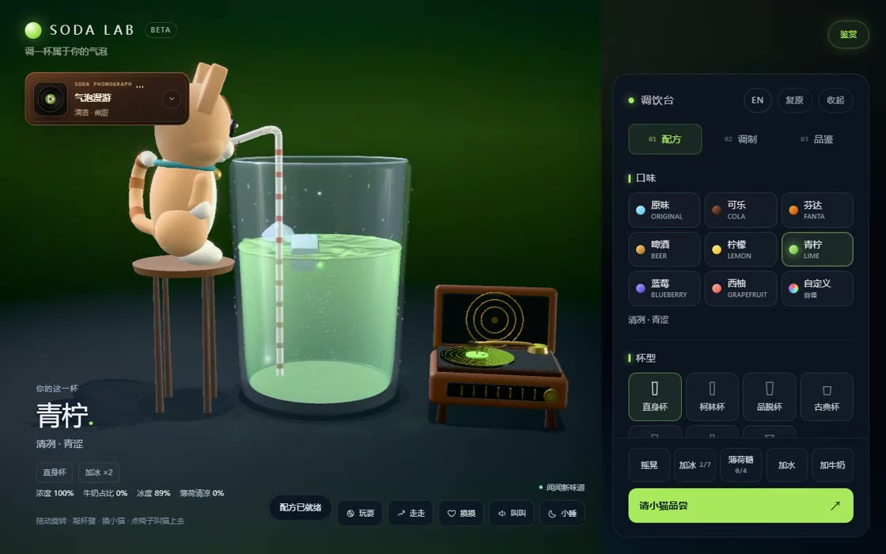
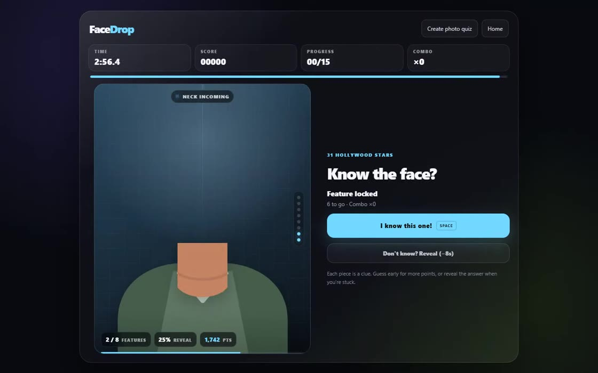
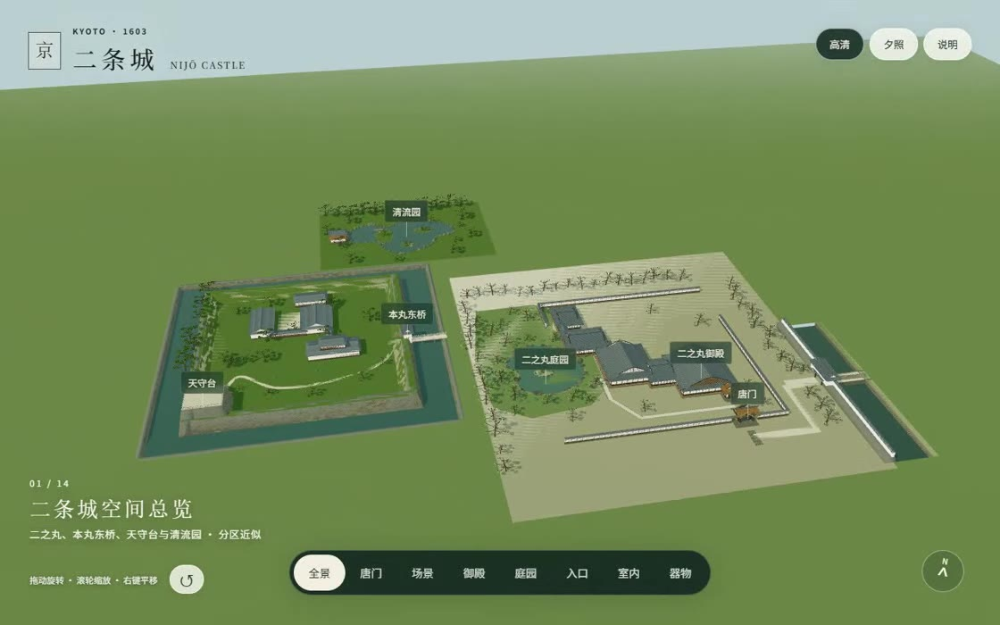
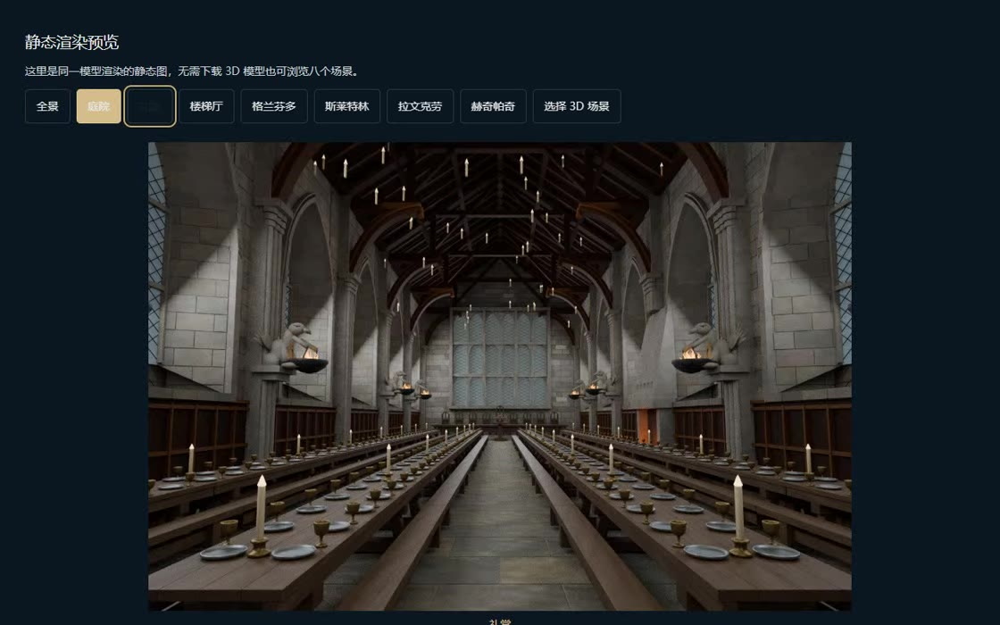

INDEPENDENT BUILDER & CURIOUS HUMANPERSONAL EXPERIMENTS / 001—008
DaleAnfer.
01 / CHROME KNOT拖动旋转 · 点击变形 ↗
Turning curiosity
into little worlds.
你好，我是 Dale。欢迎来玩。
A WORK IN PROGRESS.
JUST LIKE THE PERSON BEHIND IT.
JUST LIKE THE PERSON BEHIND IT.
02 / 3D INTERACTIONONLINE · 可体验

A LITTLE FIZZ. A LITTLE PLAY.
调一杯看看 Soda Lab.
选个口味，加一点冰，转一转手里的杯子。
一个关于气泡和好奇心的 3D 小实验。
03 / BROWSER GAMEONLINE · 可体验

A FACE. A CLUE. THAT AHA MOMENT.
来玩一局 FaceDrop
看线索一点点出现，猜出熟悉的那张脸。
三分钟挑战，或者做一份自己的照片题库。
04 / 3D ARCHITECTUREONLINE · 可探索

KYOTO, FROM ANOTHER ANGLE.
走近二条城 二条城Nijō Castle
从屋瓦、木构，到池泉庭园。
在浏览器里，换一个角度看看京都。
05 / 3D WORLD EXPLORATIONFAN-MADE · 个人创作

SOME WORLDS ARE WORTH WALKING INTO.
进入城堡 霍格沃茨Hogwarts
从城堡全景，到楼梯厅和学院休息室。
一次让想象有了入口的非官方空间练习。
06 / AI READINGALPHA · 正在打磨
m.A quieter place to read.交互示意
FROM DALE'S NOTEBOOK / 01读懂，
读懂，
不止是读完。
阅读的价值，不只在于得到答案，也在于知道自己为什么接受它。
↳ 01
每一个回答，
都有一条回到
原文的路。
Margin.
本地优先的 AI 阅读伙伴。
让阅读、思考和原文保持联系。
07 / PERSONAL EXPRESSIONMVP · 原型探索
Dale / Selected work↗
Your work,
in focus.
A SPACE THAT FEELS LIKE YOU.切换右上角的颜色试试看 ↗
Portfolio
Schema
从真实项目出发，
做一份可以继续编辑的作品集。
08 / VIDEO → KNOWLEDGEMVP · 原型探索
A MOMENT WORTH KEEPING.04:48交互示意
↳ NOTE 02
把重要画面留作笔记的证据。
拖动时间轴 ↗FrameRead
把长视频，变成有据可循的笔记。
让值得记住的内容，都能再次找到。
09 / THINKING IN PUBLICNOTES THAT KEEP GROWING
Thinking
out loud↗
10 / THE PERSON BEHIND THE TOOLSSTILL EXPLORING.
Keep it
curious.
Make it useful.
你好，我是 Dale Anfer。
我做学习和阅读的工具，也做小游戏和可以探索的 3D 空间。这里放着可以打开的作品、正在构建的产品，也放着还没想完的思考。
如果某个作品让你停留了一会儿，我们可以聊聊。